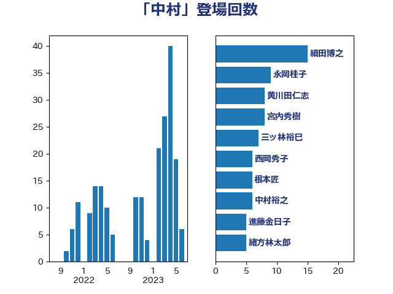

単語「中村」

| 細田博之 | 自由民主党 | 15 回 |
| 永岡桂子 | 自由民主党 | 9 回 |
| 黄川田仁志 | 自由民主党 | 8 回 |
| 宮内秀樹 | 自由民主党 | 8 回 |
| 三ッ林裕巳 | 自由民主党 | 7 回 |
| 西岡秀子 | 国民民主党 | 6 回 |
| 根本匠 | 自由民主党 | 6 回 |
| 中村裕之 | 自由民主党 | 6 回 |
| 進藤金日子 | 自由民主党 | 5 回 |
| 緒方林太郎 | 無所属 | 5 回 |
| 阿部知子 | 立憲民主党 | 4 回 |
| 山崎正恭 | 公明党 | 4 回 |
| 塚田一郎 | 自由民主党 | 4 回 |
| 鬼木誠 | 立憲民主党 | 3 回 |
| 長島昭久 | 自由民主党 | 3 回 |
| 豊田俊郎 | 自由民主党 | 3 回 |
| 藤巻健太 | 日本維新の会 | 3 回 |
| 米山隆一 | 立憲民主党 | 3 回 |
| 橋本岳 | 自由民主党 | 3 回 |
| 早坂敦 | 日本維新の会 | 3 回 |
| 佐藤正久 | 自由民主党 | 3 回 |
| 下野六太 | 公明党 | 3 回 |
| 鰐淵洋子 | 公明党 | 2 回 |
| 鈴木淳司 | 自由民主党 | 2 回 |
| 竹内真二 | 公明党 | 2 回 |
| 石川大我 | 立憲民主党 | 2 回 |
| 牧義夫 | 立憲民主党 | 2 回 |
| 渡海紀三朗 | 自由民主党 | 2 回 |
| 海江田万里 | 立憲民主党 | 2 回 |
| 横沢高徳 | 立憲民主党 | 2 回 |
| 梅村みずほ | 日本維新の会 | 2 回 |
| 宮崎雅夫 | 自由民主党 | 2 回 |
| 大塚耕平 | 国民民主党 | 2 回 |
| 伊藤忠彦 | 自由民主党 | 2 回 |
| 伊佐進一 | 公明党 | 2 回 |
| 高橋はるみ | 自由民主党 | 1 回 |
| 青木一彦 | 自由民主党 | 1 回 |
| 鎌田さゆり | 立憲民主党 | 1 回 |
| 金子恵美 | 立憲民主党 | 1 回 |
| 金子俊平 | 自由民主党 | 1 回 |
| 野村哲郎 | 自由民主党 | 1 回 |
| 赤羽一嘉 | 公明党 | 1 回 |
| 蓮舫 | 立憲民主党 | 1 回 |
| 菊田真紀子 | 立憲民主党 | 1 回 |
| 荒井優 | 立憲民主党 | 1 回 |
| 羽田次郎 | 立憲民主党 | 1 回 |
| 義家弘介 | 自由民主党 | 1 回 |
| 紙智子 | 日本共産党 | 1 回 |
| 簗和生 | 自由民主党 | 1 回 |
| 笹川博義 | 自由民主党 | 1 回 |
| 笠井亮 | 日本共産党 | 1 回 |
| 石川昭政 | 自由民主党 | 1 回 |
| 田村まみ | 国民民主党 | 1 回 |
| 田中良生 | 自由民主党 | 1 回 |
| 玉木雄一郎 | 国民民主党 | 1 回 |
| 牧島かれん | 自由民主党 | 1 回 |
| 滝波宏文 | 自由民主党 | 1 回 |
| 浮島智子 | 公明党 | 1 回 |
| 津島淳 | 自由民主党 | 1 回 |
| 江田憲司 | 立憲民主党 | 1 回 |
| 松野博一 | 自由民主党 | 1 回 |
| 松木けんこう | 立憲民主党 | 1 回 |
| 末松信介 | 自由民主党 | 1 回 |
| 木原稔 | 自由民主党 | 1 回 |
| 平口洋 | 自由民主党 | 1 回 |
| 川崎ひでと | 自由民主党 | 1 回 |
| 島尻安伊子 | 自由民主党 | 1 回 |
| 山口壯 | 自由民主党 | 1 回 |
| 山口俊一 | 自由民主党 | 1 回 |
| 山下貴司 | 自由民主党 | 1 回 |
| 小池晃 | 日本共産党 | 1 回 |
| 小林一大 | 自由民主党 | 1 回 |
| 堀場幸子 | 日本維新の会 | 1 回 |
| 城内実 | 自由民主党 | 1 回 |
| 城井崇 | 立憲民主党 | 1 回 |
| 吉田久美子 | 公明党 | 1 回 |
| 古賀友一郎 | 自由民主党 | 1 回 |
| 佐藤英道 | 公明党 | 1 回 |
| 佐藤信秋 | 自由民主党 | 1 回 |
| 中野洋昌 | 公明党 | 1 回 |
| 中山展宏 | 自由民主党 | 1 回 |
| 上杉謙太郎 | 自由民主党 | 1 回 |